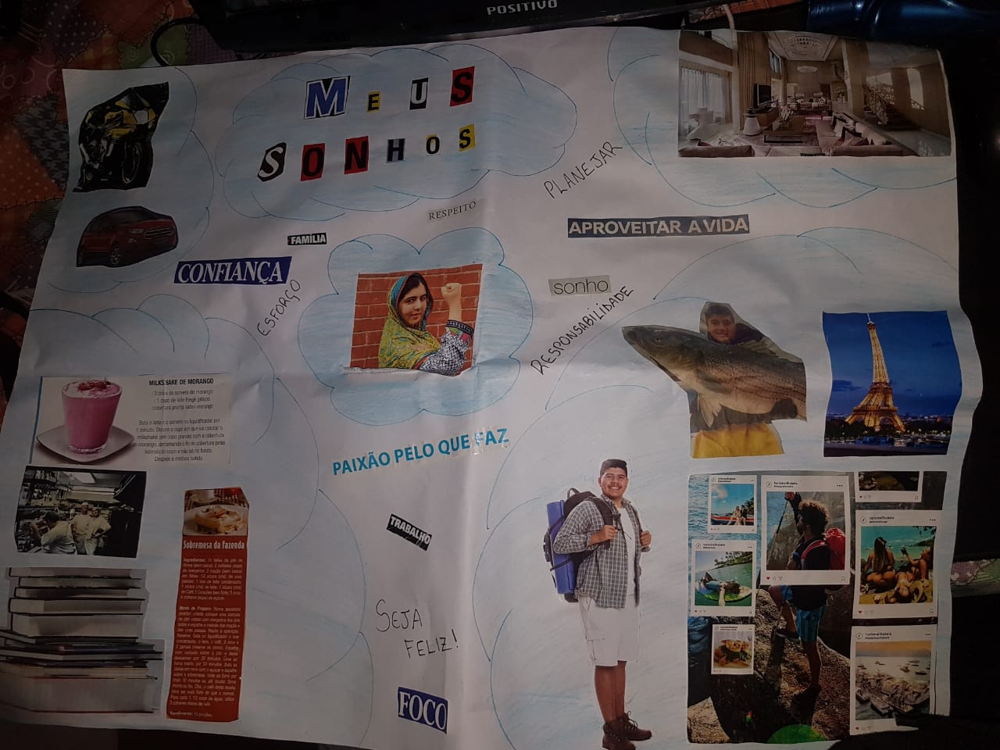
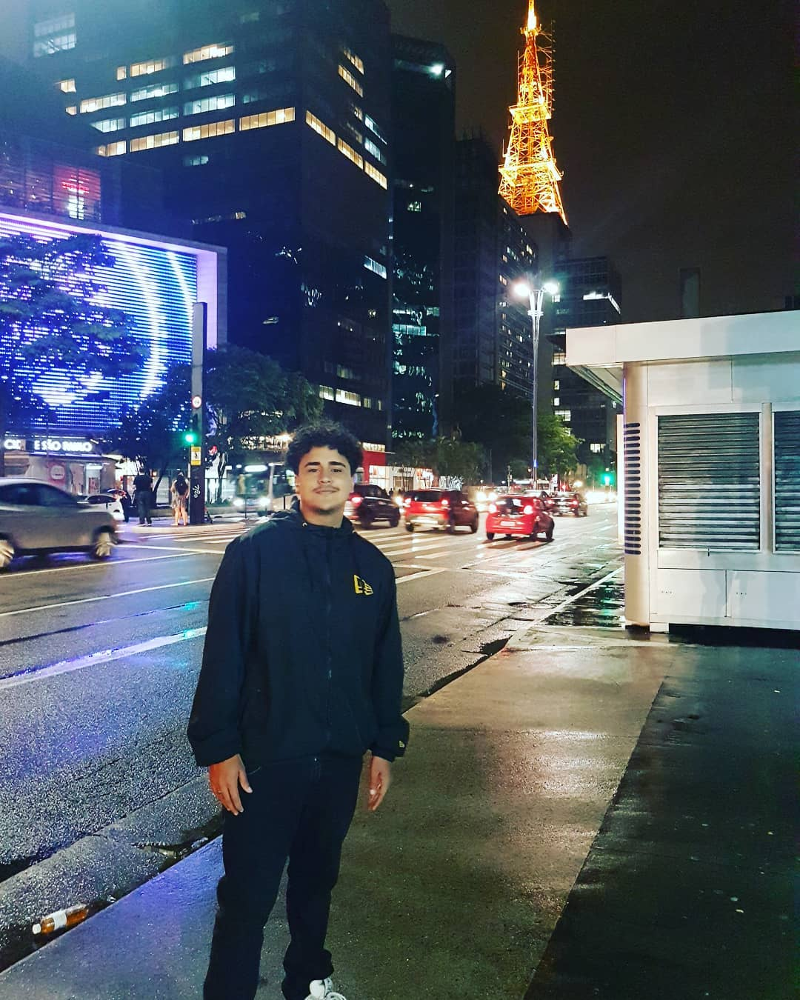

QUEM SOU EU?
São Paulo, 20/08/2020 - Sobre meus sonhos
Oi, meu nome e Geraldo tenho 21 anos, gosto muito de cozinhar sou quase um chefe de cozinha! adoro praticar esportes, principalmente basquete mas jogo de tudo,e amo musica a tecnologia sempre esteve na minha vida, desde de pequeno. Assim que terminei o ensino medio entrei na area de T.I(Tecnologia da informacao), eu cursava sistema da informacao devido a alguns problemas tive que sair. hoje estou camp jabaquara.
KANBAN
São Paulo, 26/10/2020 - sobre kanban

Kanban é um cartão de sinalização que controla os fluxos de materiais e produção em uma indústria. Foi criado na década de 1960 na Toyota para o sistema de abastecimento e controle de estoques, este sistema é muito usado por várias empresas em várias áreas, principalmente no controle de atividades. No curso do Camp Jabaquara aprendi a usar o Kanban no controle das atividades do dia a dia. Uso para planejar minhas atividades escolares e domésticas. Pretendo usar o kanban nas atividades profissionais.
MINICURRICULO
São Paulo, 26/06/2020 - meu mini curriculo;
completei o ensino medio na escola E.E Prof Niceia Albarello Ferrari, termino em 2018 tenho 21 anos sem experiencia profissional, cursei informatica (completo) e sistema da informação por 2 anos(imcompleto) Sou pró ativo sempre estive a disposição de quem precisava, na escola eu sempre estava ajudando em algo, ainda mais quando era algo pesado por ser muito grande eu sou um voluntario na programa PPF(Preparando para o Futuro) Meu objetivo de vida e trabalhar e lutar para entrar na faculdade de Biologia ou Gastronomia para contruir meu restaurante.